Inventory MS
A clearer defense story with complete role evidence
1. Problem
Why inventory needs controlled transactions, warehouse scope, and traceability.
2. Solution
How Inventory MS centralizes master data and stock movement.
3. Roles
The three role model: System Admin, Operational Manager, Warehouse Manager.
4. Workflows
Receiving, sales, returns, transfers, stock corrections, reports, and audit.
5. Engineering
Next.js frontend, Spring Boot backend, PostgreSQL, Flyway, JWT, service-layer logic.
6. Evidence
Current application screens shown separately for each role.
Inventory operations break when stock is edited without control
Untrusted stock
Manual edits make available quantity hard to defend.
No custody
A branch warehouse must only act on its own stock.
Weak approvals
Transfers, receiving, and corrections need review points.
No trace
Managers need to know who changed inventory and from which transaction.
Design target: every stock change should come from a named business workflow and leave an audit trail.
Five goals the system is designed to meet
Centralize
One source of truth for products, suppliers, customers, warehouses, and users.
Control
Stock changes through receiving, sales, returns, transfers, or approved edits.
Scope
Warehouse managers work inside their assigned warehouse.
Authorize
Role permissions decide what pages and actions are available.
Trace
Reports and audit logs explain current numbers and sensitive actions.
The system models inventory as movement plus state: quantities are the result of transactions, not silent overwrites.
A controlled inventory core surrounded by operational modules
Master data
- Products and categories
- Suppliers and customers
- Warehouses and user assignments
Inventory core
- Product-by-warehouse stock
- Stock movements
- Low-stock alerts
Transactions
- Purchase receiving
- Sales invoices and returns
- Transfers and stock edit requests
The three roles are the spine of the system
System Admin
Governance role. Manages users and role assignment, reviews audit logs, and can access reporting. It is not the day-to-day warehouse operator.
Operational Manager
Control role. Owns products, suppliers, warehouses, full stock visibility, approvals, transfers, reports, and audit review.
Warehouse Manager
Execution role. Handles warehouse stock, customers, sales invoices, sales returns, receiving, and local correction requests.
Important distinction: frontend route visibility improves usability; backend authorization remains the security boundary.
Same system, three different workspaces
| Role | Landing route | Main access | Blocked / outside scope |
|---|---|---|---|
| System Admin | /users | Users, reports, audit logs | Operational stock, products, sales, receiving |
| Operational Manager | /dashboard | Products, suppliers, warehouses, all stock, approvals, transfers, reports, audit | Warehouse-only sales execution |
| Warehouse Manager | /stock | Assigned stock, customers, sales, sales returns, receive orders, stock edit requests | System users, global warehouse management, audit logs |
Route guard
`canAccessRoute` checks role permissions before protected pages render.
Landing route
`getLandingRoute` sends each role to its actual workspace.
Action scope
Buttons and workflows are exposed only where the role has permission.
Stock moves through business events
Returns
Customer returns record refund/restock states and add stock back only when restocked.
Transfers
Operational Manager distributes products from central to branch warehouses.
Corrections
Warehouse users request edits; manager review prevents silent quantity changes.
The system separates request, approval, and stock effect
Purchase receiving
Warehouse receiving records what actually arrived and updates inventory when the receipt is accepted.
Sales return
Refund state and restock state are separate, so finance and inventory can be audited independently.
A standard layered web application
Each feature follows the same page -> hook -> service chain
Example: products/page.tsx calls useProducts, which calls product.service.ts, which talks to the backend /products endpoints.
The database is organized around operational domains
Identity
Users, roles, permissions, authentication, audit actor.
Master data
Products, categories, suppliers, customers, warehouses.
Inventory
Product-warehouse stock, movements, stock edit requests, transfers.
Transactions
Purchase invoices, receiving, sales invoices, returns.
Authentication, authorization, and audit are separate concerns
Authentication
JWT token stored client-side after login; authenticated API calls include the token.
Authorization
Frontend route checks guide navigation; backend method and endpoint permissions protect data.
Auditability
Sensitive actions are logged with actor, entity, action, time, and metadata.
Defense point: hiding a menu is not security. Security belongs to backend permission checks and auditable service behavior.
System Admin: Users
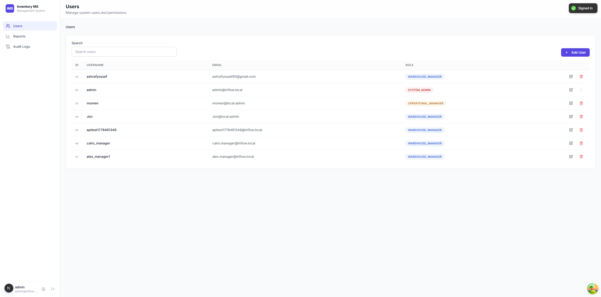
System Admin: Reports
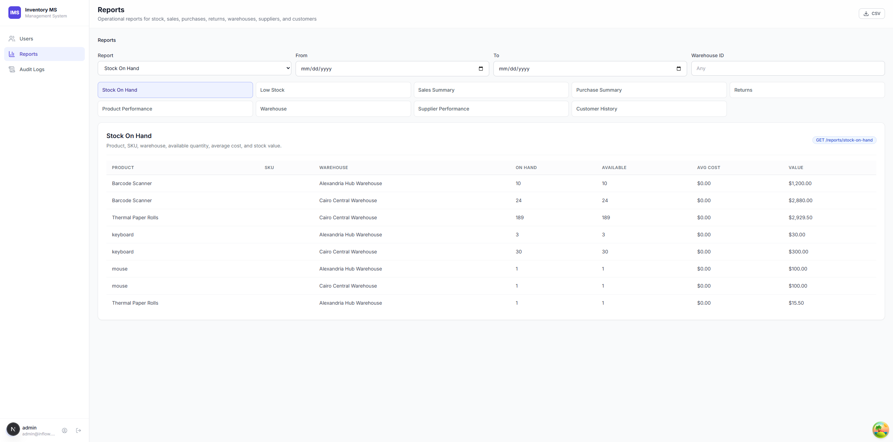
System Admin: Audit Logs
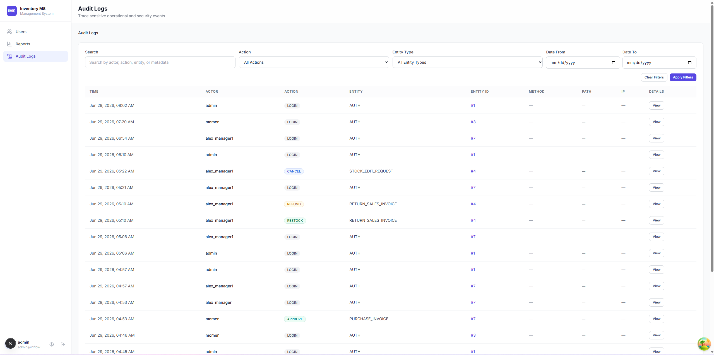
Operational Manager: Dashboard
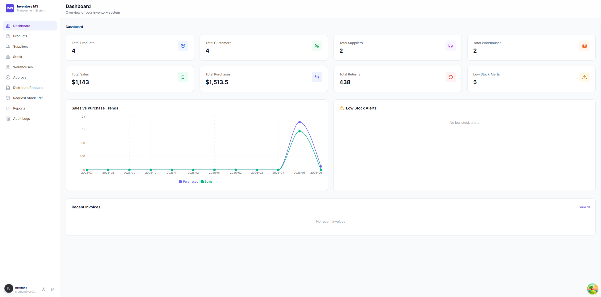
Operational Manager: Products
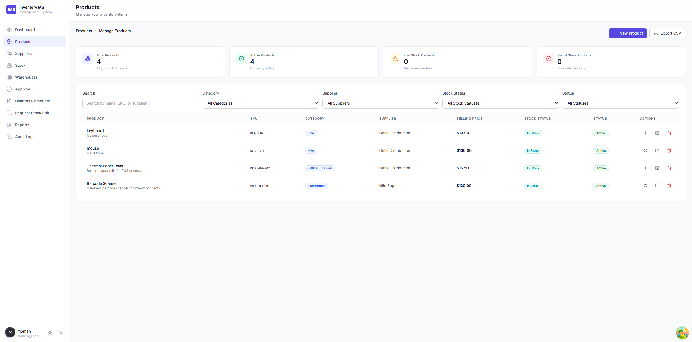
Operational Manager: Suppliers
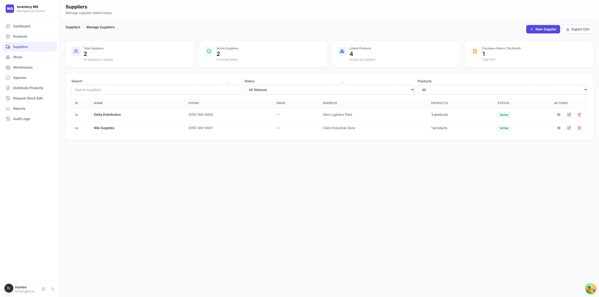
Operational Manager: Stock
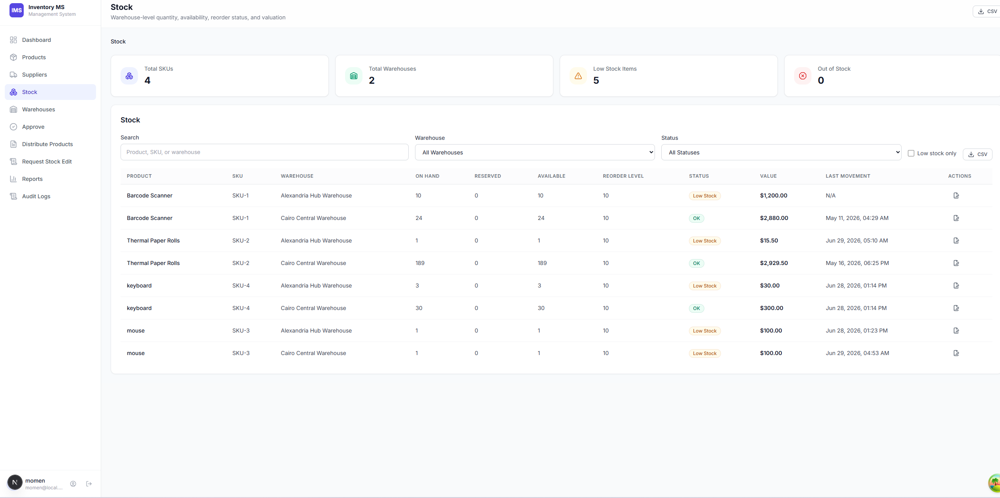
Operational Manager: Warehouses
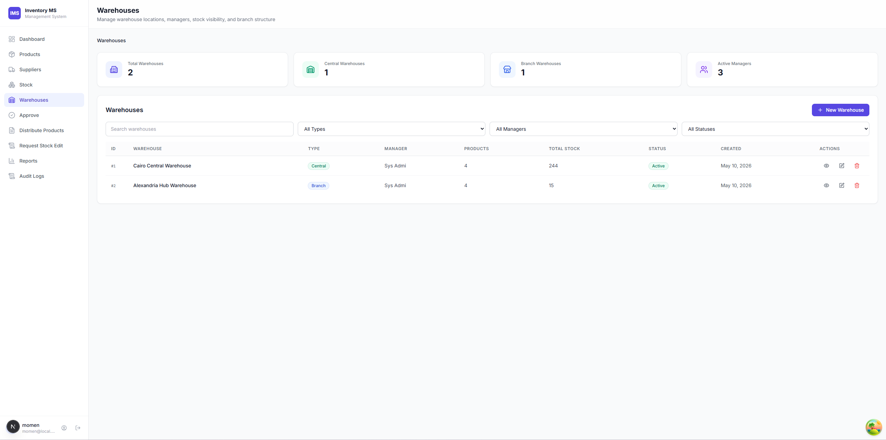
Operational Manager: Approve
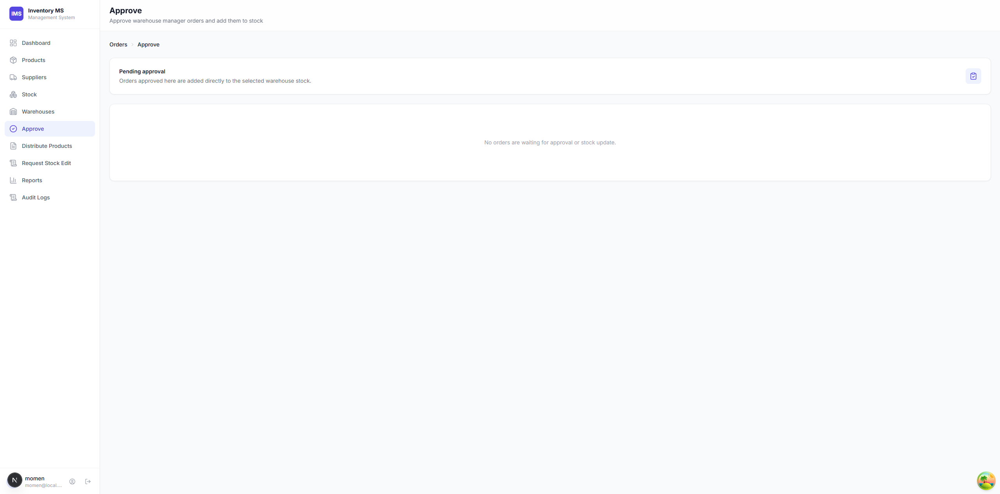
Operational Manager: Distribute Products
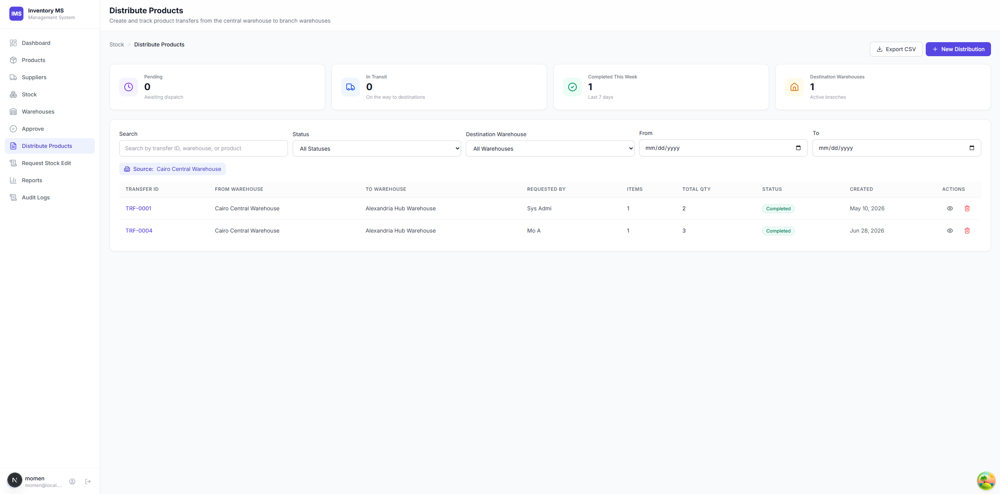
Operational Manager: Stock Requests
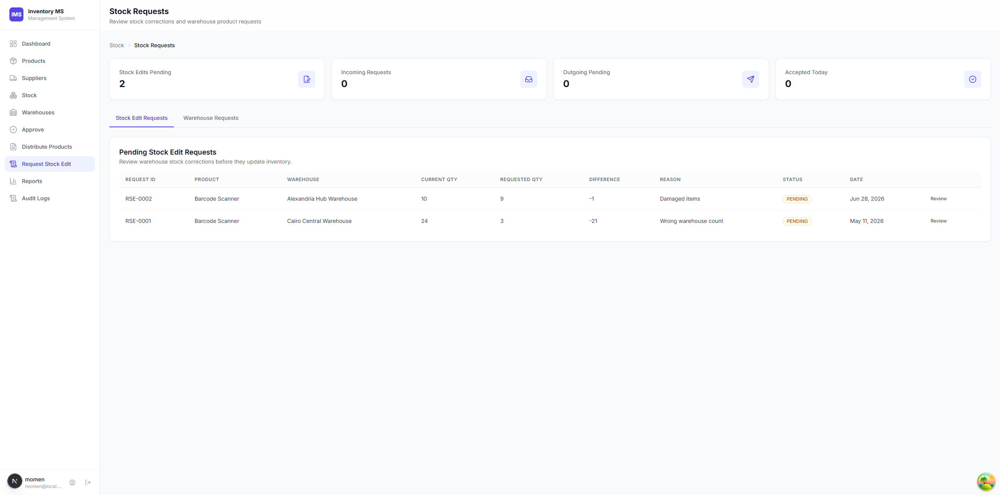
Operational Manager: Reports
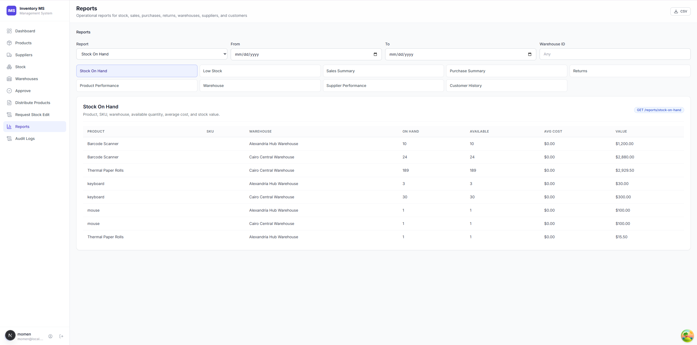
Operational Manager: Audit Logs
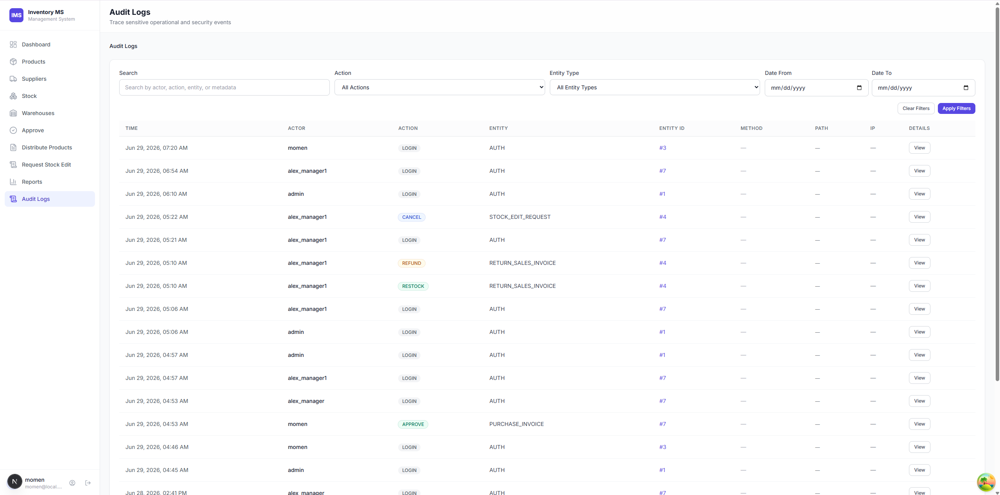
Warehouse Manager: Dashboard
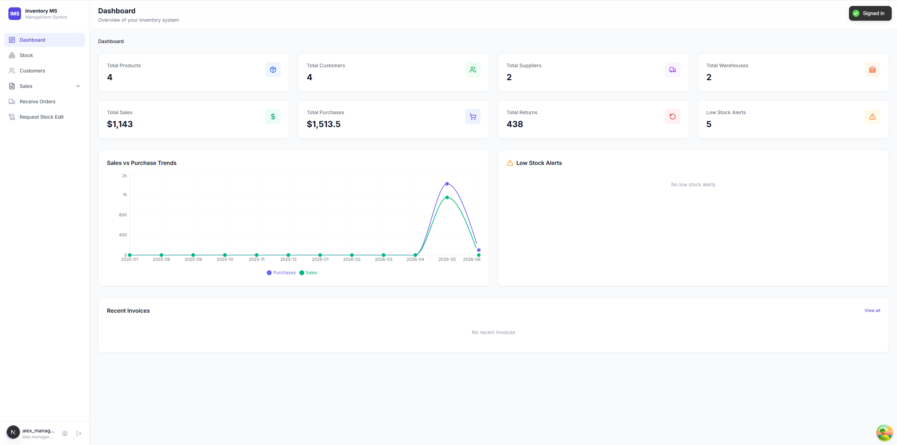
Warehouse Manager: Stock
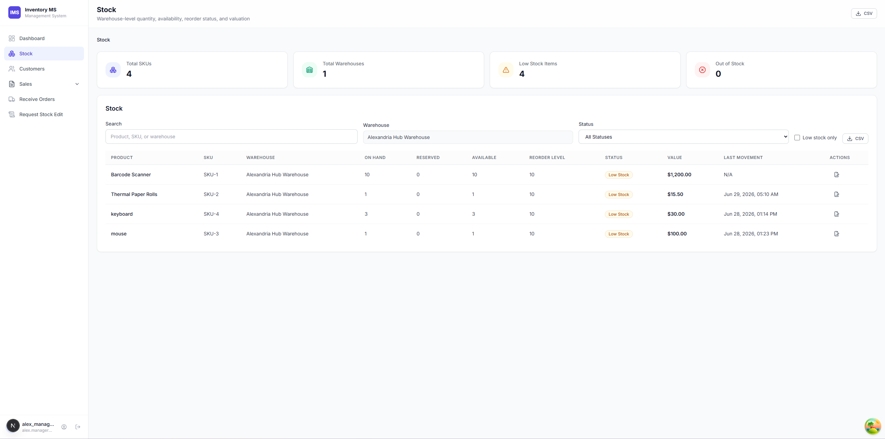
Warehouse Manager: Customers
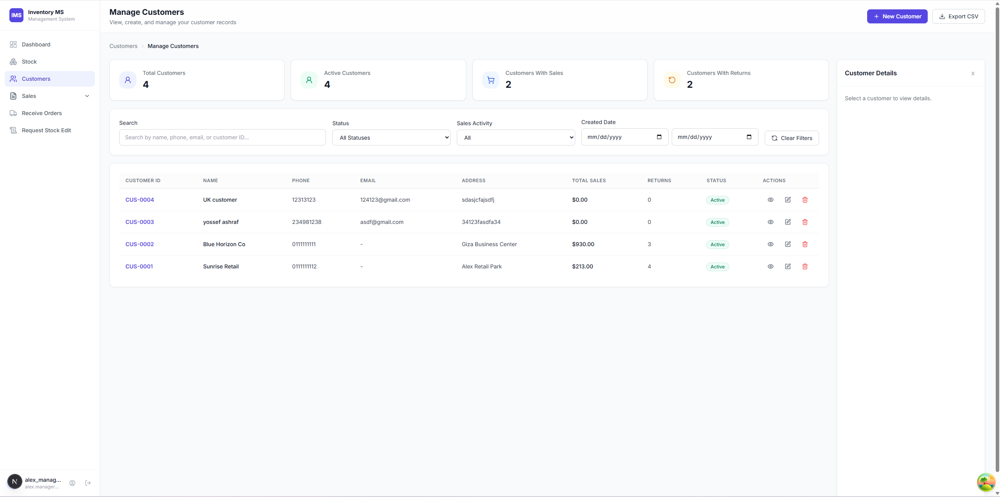
Warehouse Manager: Manage Sales
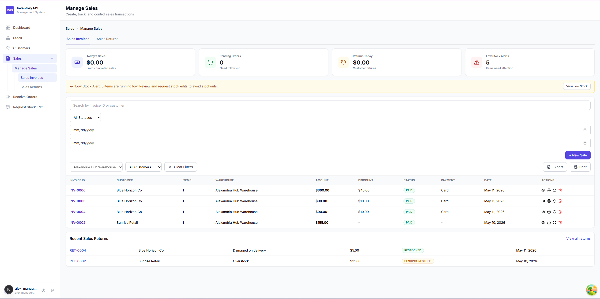
Warehouse Manager: Sales Returns
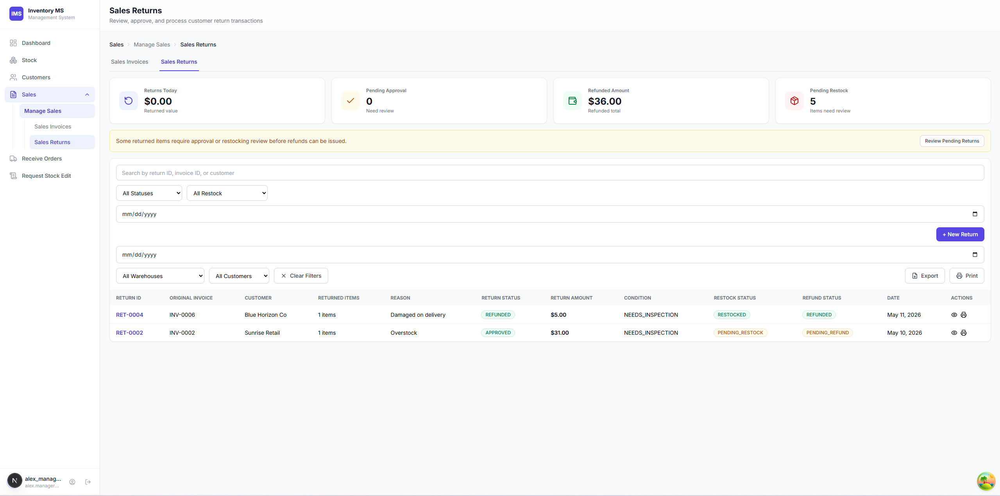
Warehouse Manager: Receive Orders
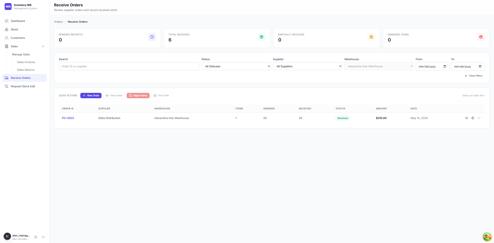
Warehouse Manager: Request Stock Edit
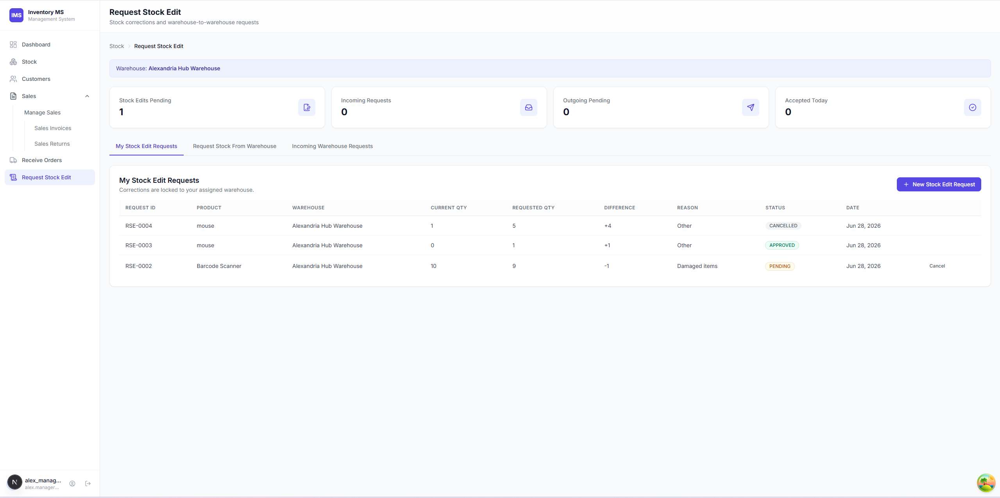
A short demo can prove the whole system
Before
Show stock level and low-stock status for a selected product/warehouse.
During
Perform receiving or sale through the proper role workflow.
After
Show updated stock, movement/report evidence, and the audit trail.
Testing focuses on business rules and presentation readiness
Frontend
TypeScript, linting, build checks, React Query driven data flows, and route-level role checks.
Backend
Spring service behavior, repository access, Flyway migrations, JWT security, and workflow state changes.
Deck QA
Every slide rendered at 1920x1080 and 1366x768 with screenshot, overflow, and console checks.
For the presentation itself, the mandatory gate is simple: no broken assets, no clipped content, no slide scrollbars, and working navigation.
The hard part was not drawing screens; it was keeping inventory trustworthy
- Stock consistency: sales, receiving, returns, transfers, and corrections all affect the same quantity.
- Lifecycle modeling: refund, restock, approval, and receipt states are related but not identical.
- Warehouse scope: branch execution must not become global administration.
- UI evidence: similar workflows are separated by role so the audience can see each permission surface.
- Schema evolution: Flyway migrations preserve a reproducible database history.
- Traceability: operational events need enough metadata to explain the final number.
The current project is defense-ready, with clear next steps
More tests
Increase backend workflow and frontend component coverage.
Barcode flow
Add scanner-first receiving and stock count workflows.
Notifications
Escalate pending approvals and low-stock thresholds.
Forecasting
Use sales history to forecast reorder quantities.
The architecture leaves room for these features because master data, transactions, roles, and audit are already separated.
Inventory MS turns inventory into controlled, auditable operations
Business value
Teams can trust stock, understand changes, and separate responsibilities.
Technical value
The stack uses clear layers: Next.js, Spring Boot, PostgreSQL, Flyway, and JWT.
Defense value
The rebuilt deck proves roles and workflows without repeating the same screens.
Final message: the project is not only an inventory list; it is a controlled inventory workflow system.
Questions
Thank you
Core ERD domains
Identity
users, roles, warehouse assignment, login identity.
Catalog
products, categories, suppliers, customers, warehouses.
Stock
Product-warehouse rows plus movement history and edit requests.
Purchasing
Purchase invoices and receiving workflow records.
Sales
Sales invoices, return invoices, refund and restock statuses.
Governance
Reports read from operational data; audit logs capture sensitive events.
Role-to-capability matrix
| Capability | System Admin | Operational Manager | Warehouse Manager |
|---|---|---|---|
| Users and role assignment | Yes | - | - |
| Products, suppliers, warehouses | - | Yes | - |
| All warehouse stock | - | Yes | - |
| Assigned warehouse stock | - | - | Yes |
| Sales and customer returns | - | - | Yes |
| Approvals, transfers, stock request review | - | Yes | Create requests only |
| Reports and audit logs | Yes | Yes | - |
Repository facts used in the deck
| Area | Current implementation |
|---|---|
| Frontend | Next.js App Router, React, TypeScript, React Query, Axios |
| Backend | Spring Boot, Java 21, service-layer business logic |
| Database | PostgreSQL schema evolved by Flyway migrations V1 through V14 |
| Local ports | Frontend :3000, backend :9090, local DB guide :5433 |